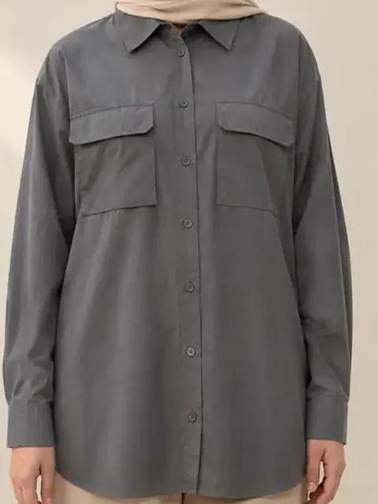
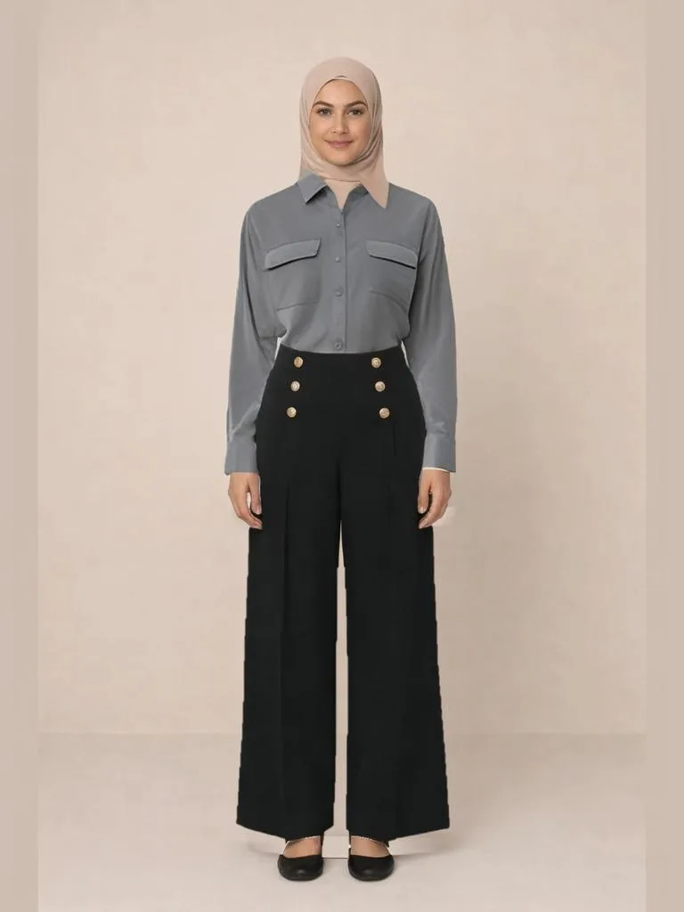
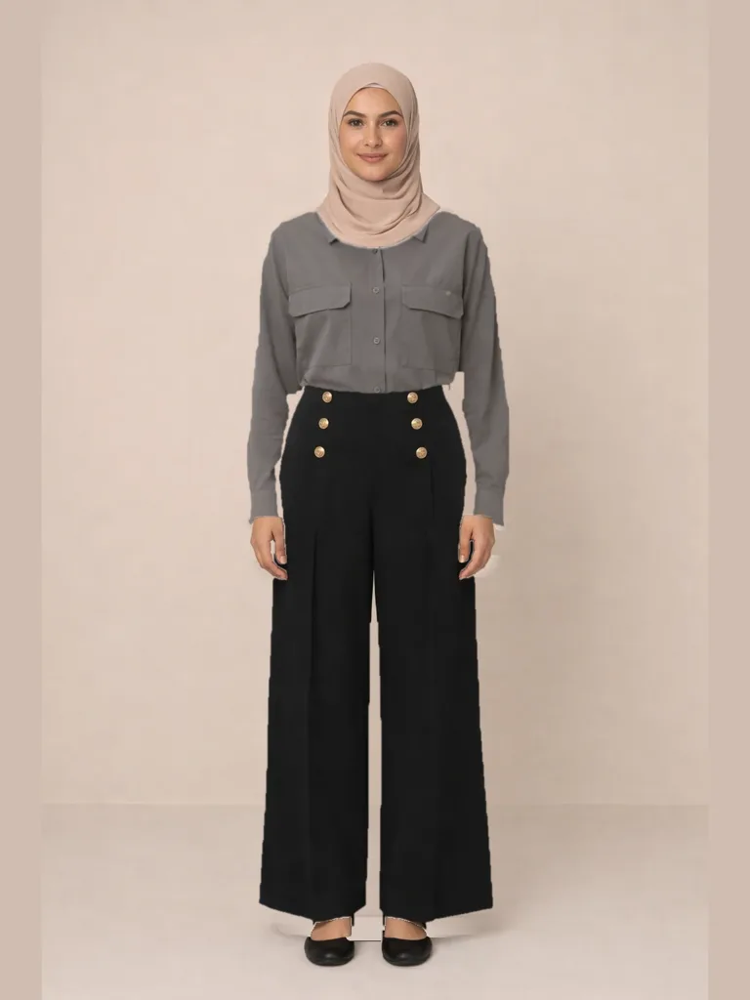
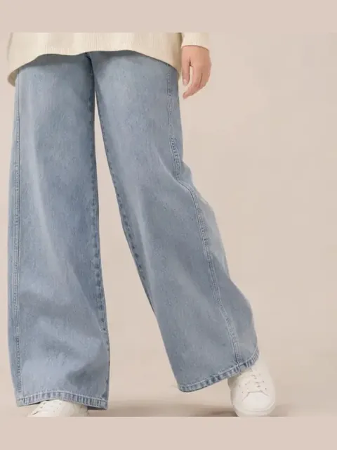
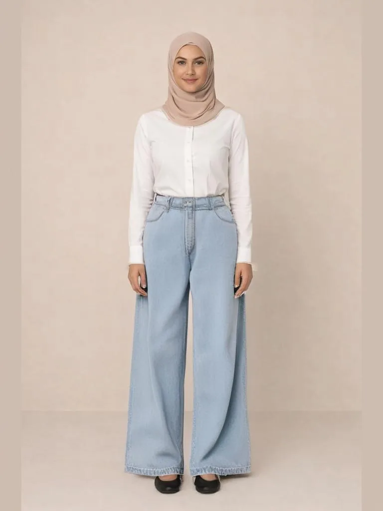
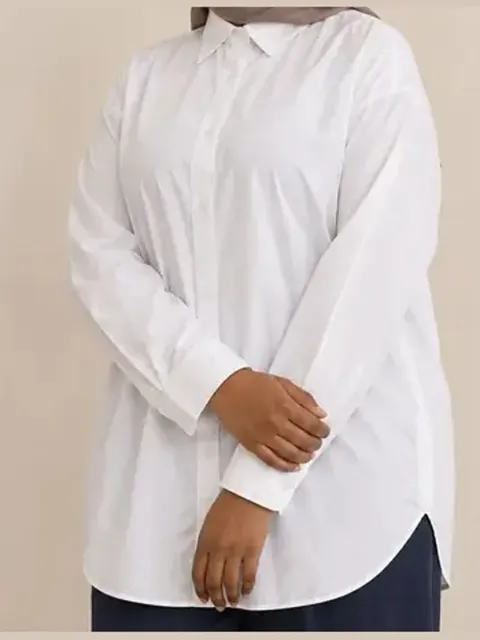
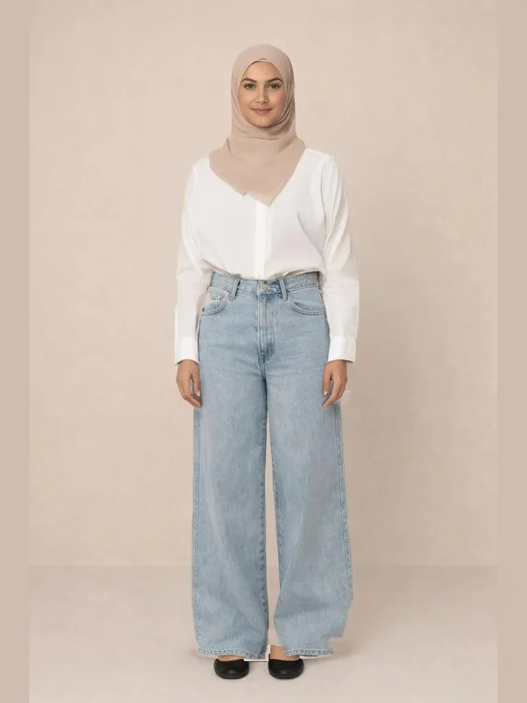
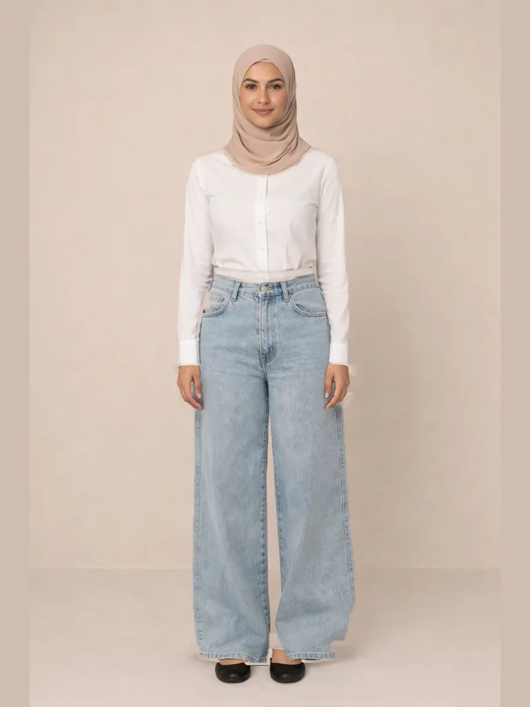
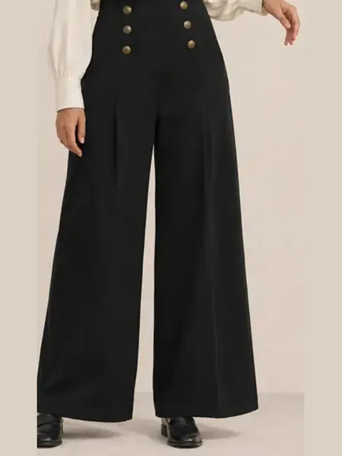
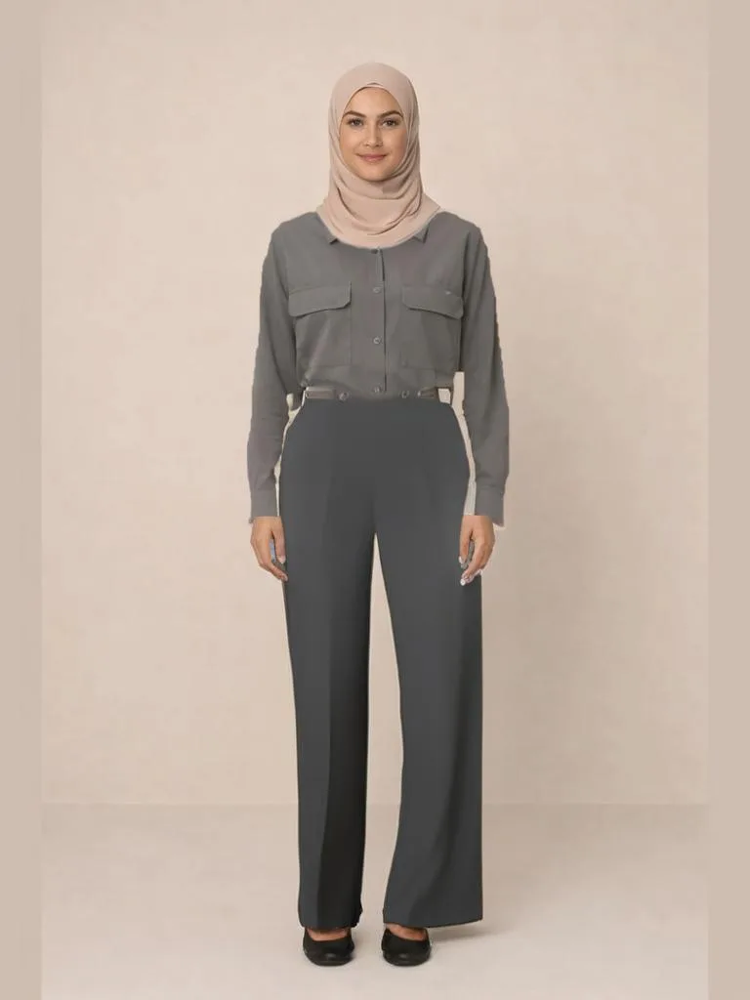

غرفة الغيار: تجربة IDM-VTON
مقارنة بين نموذج IDM-VTON على Replicate والصور الحالية (gpt-image) على نفس الموديل. صفحة تجربة داخلية، 28 نوفمبر 2026.
قميص يوتيليتي رمادي نجح
الجيوب والياقة والأزرار مظبوطة، والوجه واليدين ثابتين.



جينز فاتح واسع نجح
القصة الواسعة ولون الغسلة قريبة جداً من الأصل.



القميص الأبيض الكلاسيكي نص نص
الياقة راحت وصار القميص برقبة V، وطرف الحجاب تشوّه شوي.



بنطلون واسع بأزرار فشل
طلع رمادي سادة، بدون الأزرار الذهبية وبدون اللون الأسود.



الكلفة
4 صور كلّفت $0.09، يعني حوالي $0.0225 للصورة، وكل صورة بتاخد حوالي 17 ثانية. دقة الصورة 768×1024.